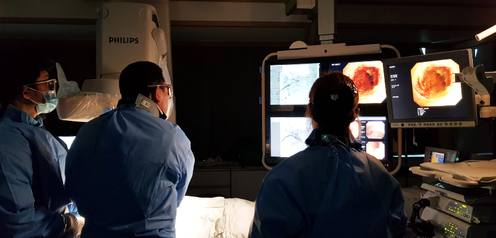

췌장담도센터

췌장·담도질환 진단·치료
초음파내시경(EUS)
역행성 췌담도 조영술(ERCP)
췌장 및 담도 질환 증가 추세, 그 원인은?
췌장암은 2018년 기준 국내 통계상 발생률이 9위이나 미국에서는 3위 이내에 드는 비교적 흔한 질환입니다. 췌장암이 최근 들어 국내에서도 점차 증가하는 추세이며 그 원인은 서구화된 식습관으로 인해 지방 및 단백질의 과도한 섭취가 우선이나 원인 불명의 췌장 낭종 증가도 주요한 원인으로 지목되고 있습니다. 지방식의 과다 섭취는 췌장관 세포 및 췌장효소 분비 세포의 손상을 유발하고 유전적 변이를 거쳐 악성종양으로 발전할 수 있습니다.한편 점액 분비성 췌장 낭종은 발병 후 시간이 지남에 따라 악성화 가능성이 높아지나, 조기에 발견하고 철저한 추적을 하면 비록 췌장암이 발병하더라도 완치될 수 있는 기회가 높습니다. 담도암은 특히 부산, 울산, 경남 지역에 높은 발병률을 나타내는데, 그 이유는 반복된 민물고기를 날 것으로 섭취함으로써 간디스토마 감염증이 발생하여 이후 담도암으로 발전하는 것으로 알려져 있습니다.
췌장암과 담도암의 생존율이 낮은 이유는?
가장 큰 원인으로 조기 발견이 어렵기 때문입니다. 이는 수술을 통해 완치가 어렵다는 말과 일맥상통합니다. 췌장 및 담도는 인체의 가장 깊숙한 곳에 위치하므로 혈액 검사와 복부 초음파와 같은 일반적인 진단 기법으로 조기에 병변을 발견하기 어렵고 두 장기의 특성상 질환 초기에 증상이 거의 나타나지 않기 때문에 대부분 병이 많이 진행될 때까지 건강하다고 믿고 생활합니다. 복부 CT 및 MRI 등의 보급으로 진단율이 올라가고 있으나 여전히 조기 진단율은 20% 미만이며, 5년 생존율도 5% 미만으로 극히 예후가 나쁩니다.최근 초음파내시경(EUS)의 보급으로 1cm 이하의 작은 췌장 종괴를 조기에 발견할 수 있게 되었고 이는 췌장 및 담도암의 획기적인 예후 향상에 도움을 줄 것으로 생각합니다.
췌장 담도 질환의 치료
두 질환 모두 조기 발견 시 수술적인 절제 시 완치가 가능합니다. 하지만 조기 진단율이 20% 미만이고, 수술 대상이더라도 광범위 간 절제나 다장기 절제술이 요구되어 고령 및 기저 질환이 있는 분들은 수술을 주저하며, 특히 수술 후 재발률이 매우 높아 5년 생존율은 5% 미만으로 예후가 좋지 못합니다. 따라서 조기 진단을 위한 췌장 및 담도 검진 및 병변 발견 시 주기적인 관리가 꼭 필요합니다.수술이 불가능한 담낭 및 담도암의 경우 담도 폐쇄가 필수적으로 동반하므로 담도배액술 및 항암 치료를 병행합니다. 일부 환자에서는 광역동성 치료를 통해 국소 병변을 소멸시켜 담도 배액을 보다 오랫동안 유지시키고 주기적인 항암치료를 하여 예후를 향상시킵니다.
췌장 및 담도계 질환
두 질환 모두 조기 발견 시 수술적인 절제 시 완치가 가능합니다. 하지만 조기 진단율이 20% 미만이고, 수술 대상이더라도 광범위 간 절제나 다장기 절제술이 요구되어 고령 및 기저 질환이 있는 분들은 수술을 주저하며, 특히 수술 후 재발률이 매우 높아 5년 생존율은 5% 미만으로 예후가 좋지 못합니다. 따라서 조기 진단을 위한 췌장 및 담도 검진 및 병변 발견 시 주기적인 관리가 꼭 필요합니다.수술이 불가능한 담낭 및 담도암의 경우 담도 폐쇄가 필수적으로 동반하므로 담도배액술 및 항암 치료를 병행합니다.
일부 환자에서는 광역동성 치료를 통해 국소 병변을 소멸시켜 담도 배액을 보다 오랫동안 유지시키고 주기적인 항암치료를 하여 예후를 향상시킵니다.
췌장 및 담도계 질환의 진단 방법
1. EUS(초음파 내시경)-췌담도 질환 조기발견의 획기적 전환점내시경 끝에 초음파를 장착해 위 십이지장을 통해 담낭 및 담도 그리고 췌장의 가장 근접 부위까지 접근해 높은 해상도와 다양한 기법을 이용하여 조기 진단 및 정확한 진단을 할 수 있는 촬영 기법. 방사선 노출이 전혀 없고 검사 중 실시간으로 필요시 조직 및 세포 체취가 가능해 병리학적 확진을 동시에 할 수 있는 이점 존재. 1cm 미만의 조기 췌장암 발견에 가장 적합한 방법이며 췌장 낭종. 검사 및 조직 체취를 동시에 할 수 있어 췌장 담도암 진단에 획기적인 진단 기법
2. ERCP(내시경적역행담췌관조영술)-진단과 치료가 동시에 가능, 고난이도 내시경 시술
십이지장경이라고 하는 특수 내시경을 이용하여 췌관과 담관이 만나는 십이지장 유두부에 접근한 후 췌관 및 담관을 먼저 촬영하여 정확한 진단을 내리고 동시에 병변 발견 시 실시간으로 담석 제거, 담도 배액술, 췌관 결석 제거 및 췌관 배액술을 시행할 수 있는 고난도의 시술입니다.